电视剧《玫瑰的故事》给观众的这个夏天带来了很多追剧的欢乐，虽然已经收官一段时间了，但其剧情、演员和角色，依然让很多人津津乐道，念念不忘。
日前，《玫瑰的故事》举行庆功宴，又见黄玫瑰，又见刘亦菲，美人美图，对网友眼睛太友好了！
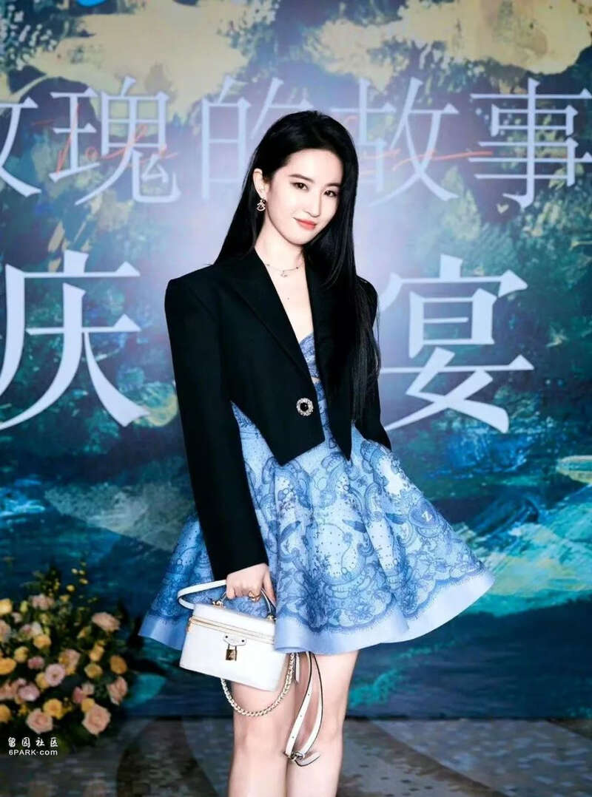
刘亦菲超话主持人发文说：大爆剧《玫瑰的故事》庆功宴正在进行中，期待更多美图与报道。
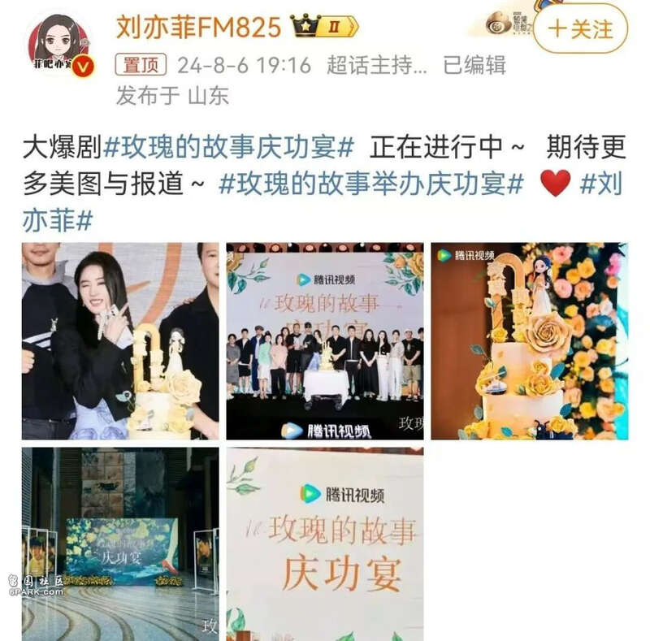
照片中的刘亦菲，身着一条V领蓝色印花蓬蓬裙，外套黑色超短小外套，站在一个三层的黄玫瑰大蛋糕旁，笑得非常灿烂迷人。
超话主持还晒出了一张《玫瑰的故事》众位主创的大合影，刘亦菲站在导演汪俊左边，汪俊的右边是佟大为，佟大为的右边是该剧的编剧李潇。
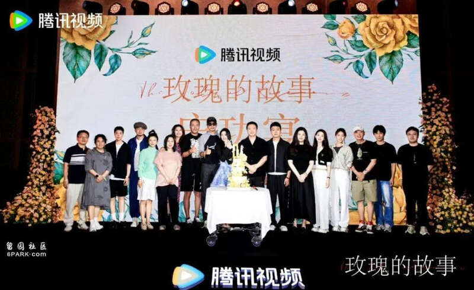
7日晚，刘亦菲本人晒出多张个人美照以及合影，并配文说：玫瑰的聚会和最好的你们。
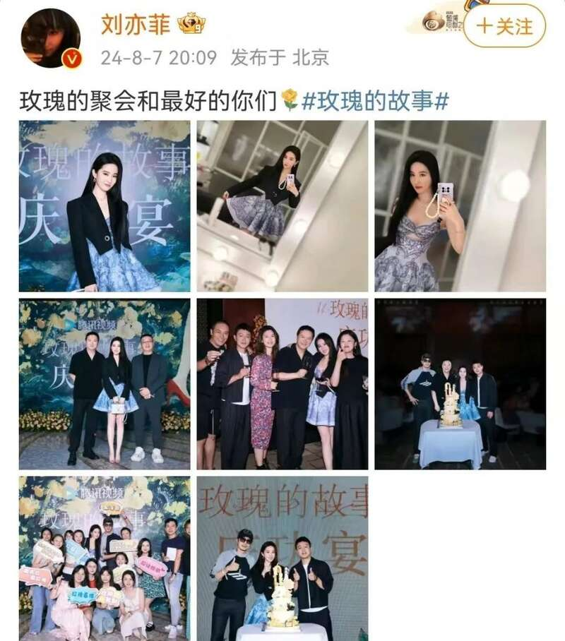
刘亦菲的一张单人照，身穿小蓝裙，黑色长发披肩，手中提着一个LV的白色小包包，面带微笑，优雅美丽。
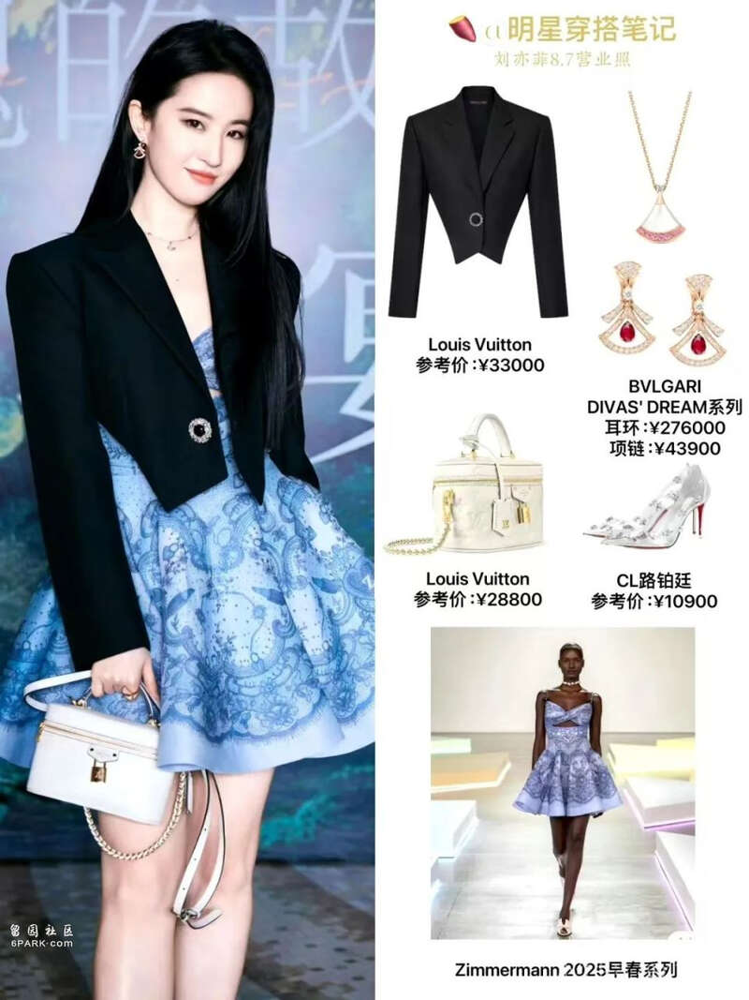
刘亦菲这一身美丽的行头，据网友晒出的品牌与价格，价格可能得超过15万！
在庆功宴上，玫瑰与果冻哥又同框了！
彭冠英戴着黑色棒球帽，留起了小胡子，不仔细看差点都没认出来！
可惜没有看到林更新出席，不能看到方协文与玫瑰同框了。
而在《玫瑰的故事》中饰演关芝芝的演员蓝盈莹，也晒出了刘亦菲与她的两张合影。
照片中，蓝盈莹身着黑色深V短款上衣，刘亦菲小蓝裙、黑外套，两位美女揽着肩，举着酒杯对着镜头微笑，颜值爆表，看上去令人赏心悦目。
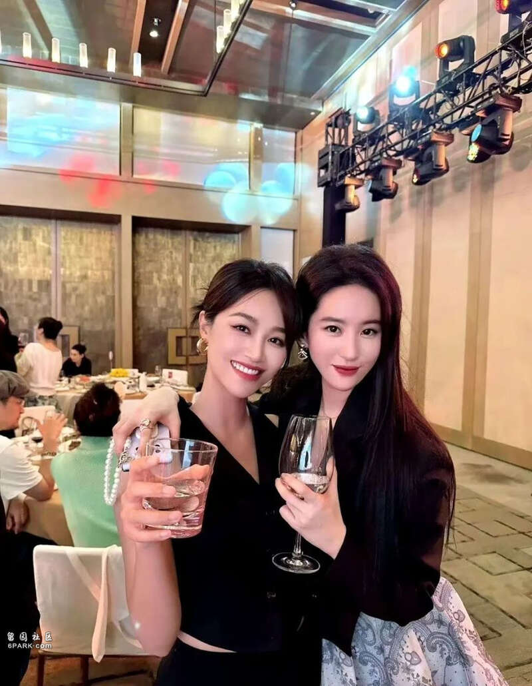
刘亦菲笑容甜美，少女感十足，蓝盈莹也越来越有飒爽气质了。
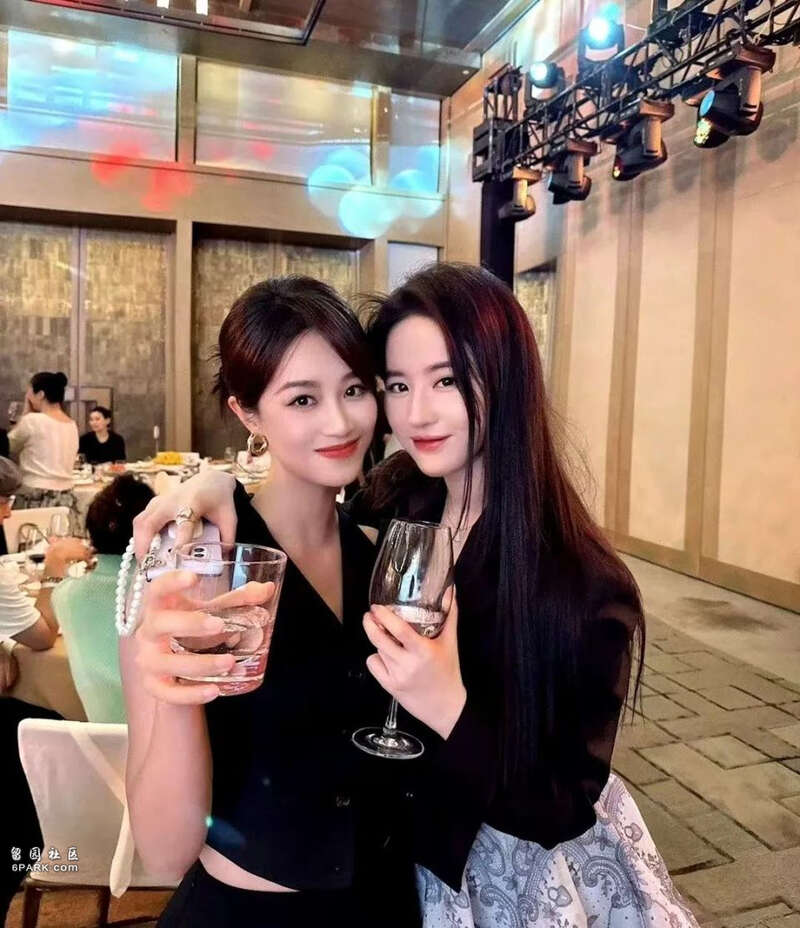
蓝盈莹还晒出了她与陈瑶、张月的合影，三位美女的同框也好看。
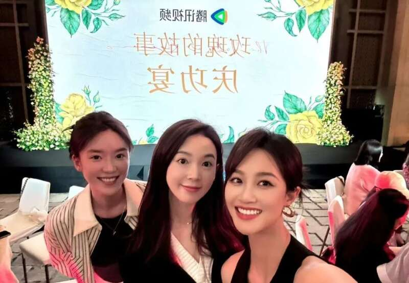
蓝盈莹还与佟大为合了影。个子高的牡丹哥特意往前倾着身子拍照，十分照顾美女的镜头感。
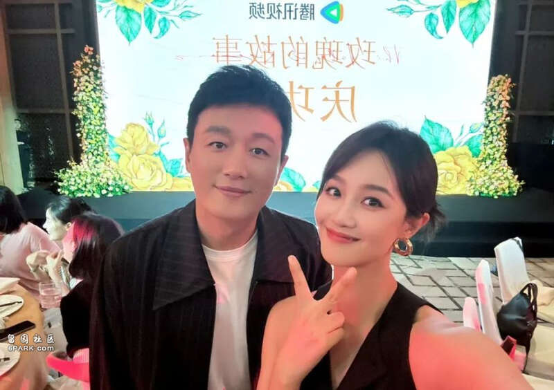
《玫瑰的故事》确实称得上是大爆剧，而刘亦菲也是当之无愧的爆剧女王。
《玫瑰的故事》在6月播出期间，热度和讨论度断层式第一。而且不但霸榜了整个6月，位居多个网络榜单的榜首，在已经完结的情况下，7月份还拿下了腾讯娱乐影响力排行第二的好成绩，电视剧长尾效应明显。
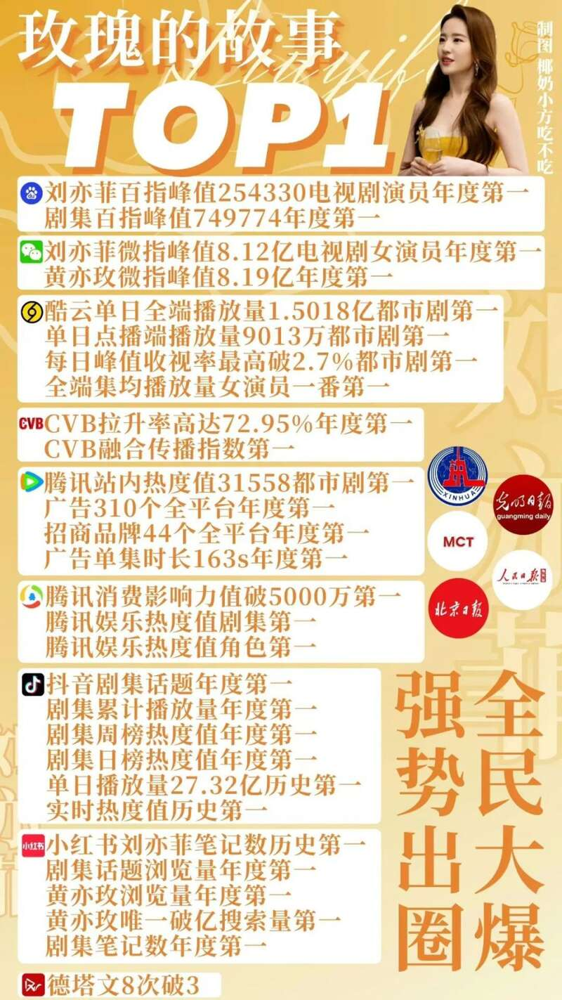
这部剧首开国产都市剧真正大女主剧的先河，不再以女子找到幸福的爱情与婚姻为人生的终点，而是将重点放在女子如何寻找自我、发现自我和实现自我的人生征途中。
大结局的黄亦玫，离了婚，但没有再婚，她事业做得风生水起，但也并不以挣到钱有了事业为荣，而是一个人骑上机车，奔向向往的远方，结局意境十分开阔美好，令人意犹未尽，感慨万千。
而且刘亦菲也是当之无愧的招商女王，据网友统计，在2024年四大网络平台的所有爆剧中，《玫瑰的故事》招商和整体植入品牌都是第一名。
据德塔文的统计，2024年上半年电视剧景气指数排行，腾讯视频出品并首播的4部剧《庆余年第二季》《繁花》《玫瑰的故事》和《与凤行》，分列前四。
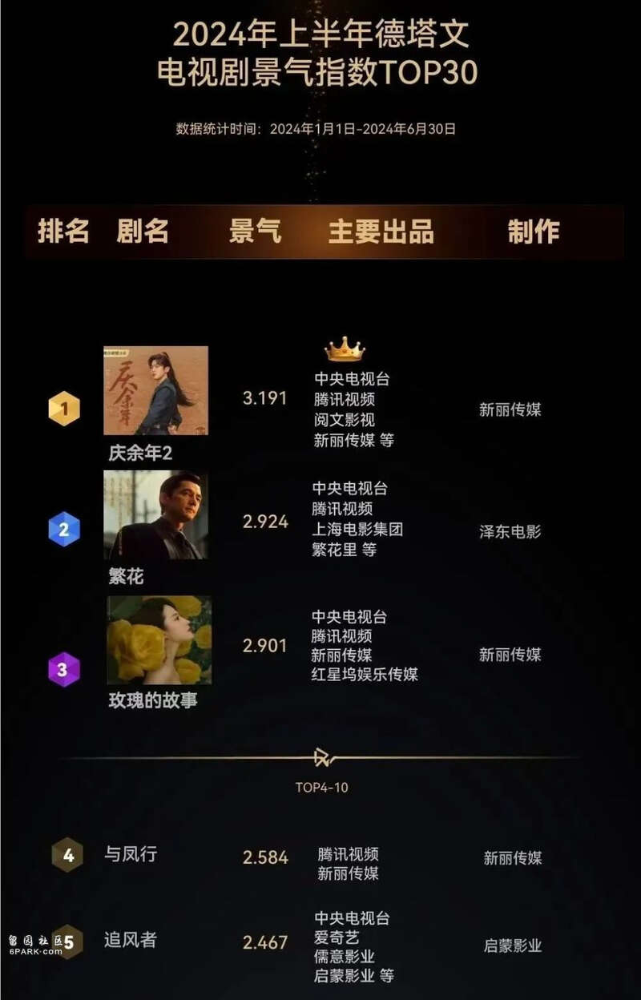
上半年首播的剧，可以说腾讯视频赢麻了！
2024年下半年已经开始了，由于奥运会的热度吸走了影视的收视率，所以这个8月开篇，电视剧市场显得有点冷清。
不过，随着奥运会即将结束，影视剧的吸引力又回来了！
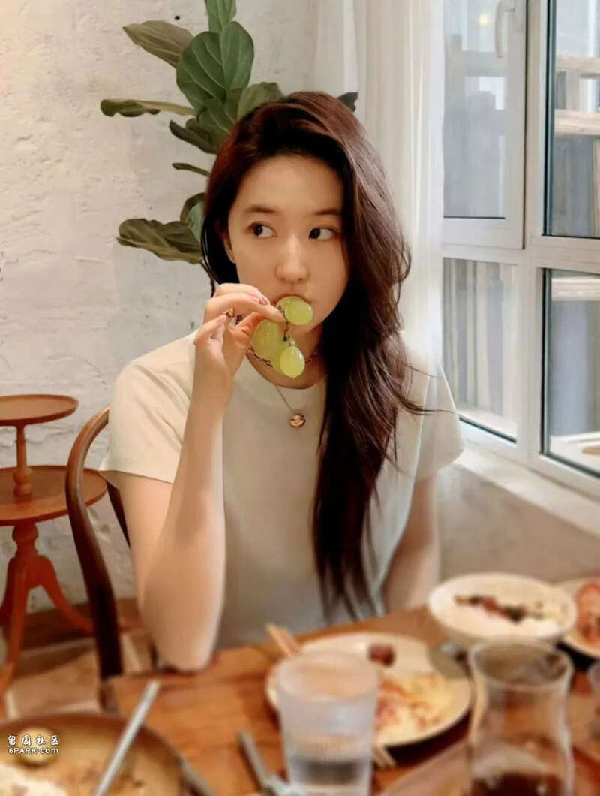
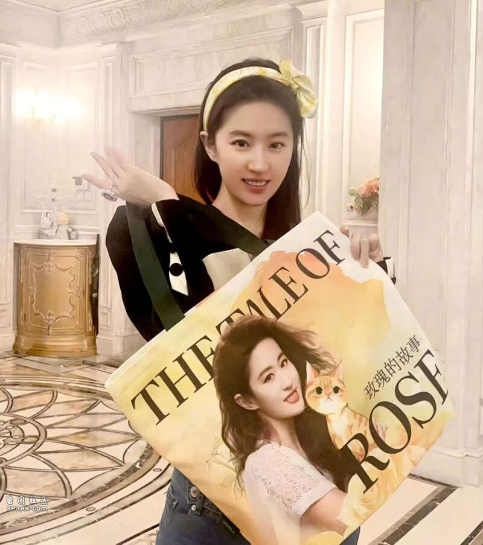
那么，下半年的影视市场上，哪部电视剧将会引爆收视和网络热议呢？
让我们拭目以待。
Advertisements